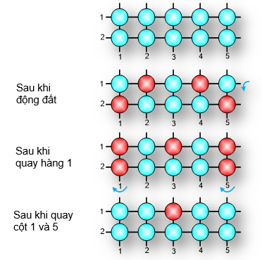

Công ty bánh kẹo IOI chuyên sản xuất bánh Chà lam, làm từ bỏng nếp, mật mía và nước gừng. Gạo nếp được rang thành bỏng theo kiểu truyền thống, dùng than củi. Tuy quy trình rang là truyền thống, nhưng quá trình rang đã được tự động hóa.
Máy rang có R×C hộp dẹt, lắp thành R hàng, mỗi hàng có C hộp đựng gạo nếp. Định kỳ, tất cả các hộp được trở mặt để tiếp cận với lửa than bên dưới. Trong một ca sản xuất, động đất xẩy ra. Một số hộp bị lật mặt. Thiết bị lập tức chuyển sang chế độ điều khiển bằng tay. Ở mỗi hàng và mỗi cột có một cần gạt. Mỗi lần kéo cần tất cả các hộp trong hàng (hoặc cột) bị lật mặt. Ở hình dưới, các mặt trên của hộp là xanh. Sau động đất, một số hộp lật mặt đỏ lên. Bằng các thao tác kéo cần như trên hình vẽ thì chỉ còn một hộp không lật được đúng mặt. Bỏng ở trong đó sẽ không đủ tiêu chuẩn để sản xuất bánh.

Yêu cầu: Cho R, C và ma trận R×C các phần tử {0, 1}. Số 1 ký hiệu hộp tương ứng bị lật do động đất. Hãy xác định số hộp tối đa cho sản phẩm đạt chất lượng nếu công nhân trực thao tác chỉnh lý bằng tay tốt.
Dữ liệu nhập:
- Dòng đầu tiên chứa 2 số nguyên R và C (1 ≤ R ≤ 10, 1 ≤ C ≤ 103),
- Mỗi dòng trong R dòng sau chứa C số nguyên trong tập {0, 1} mô tả một hàng của máy rang.
Kết quả:
- Là số nguyên – số hộp cho thành phẩm tốt.